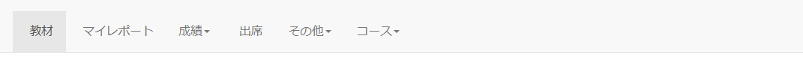

課題を提出して、出せたか確認する
WebClassで課題を出すなら、先生に指定された課題ページを開いて、ファイルを選んで提出します。ファイルを選んだあとに提出ボタンがある場合は、そこまで押してください。
提出したら「マイレポート」を見る
提出したあと、授業のコース画面の上にある「マイレポート」を押すと、出したものを確認できます。

- 「マイレポート」を開いて、今回の課題が一覧にあるか見ます。
- PDFなどのファイルで提出した場合は、一覧から自分が提出したファイルを一度ダウンロードします。
- ダウンロードした方を開いて、ちゃんと読めるか、出したかった内容かを確認します。複数ファイルを出す課題なら、全部そろっているかも見ます。
出したファイルを開くところまで
提出したファイルが破損していて、単位を落とした知り合いがいます。かくいう私も、ファイルを一つ提出し忘れて、Sが取れそうだった授業の評価がAになってしまいました。
出す前に自分のPCで開けていても、提出した方も一度開いておくのがおすすめです。提出漏れや違うファイルに気づいたら、締切前に再提出できるかを確認してください。